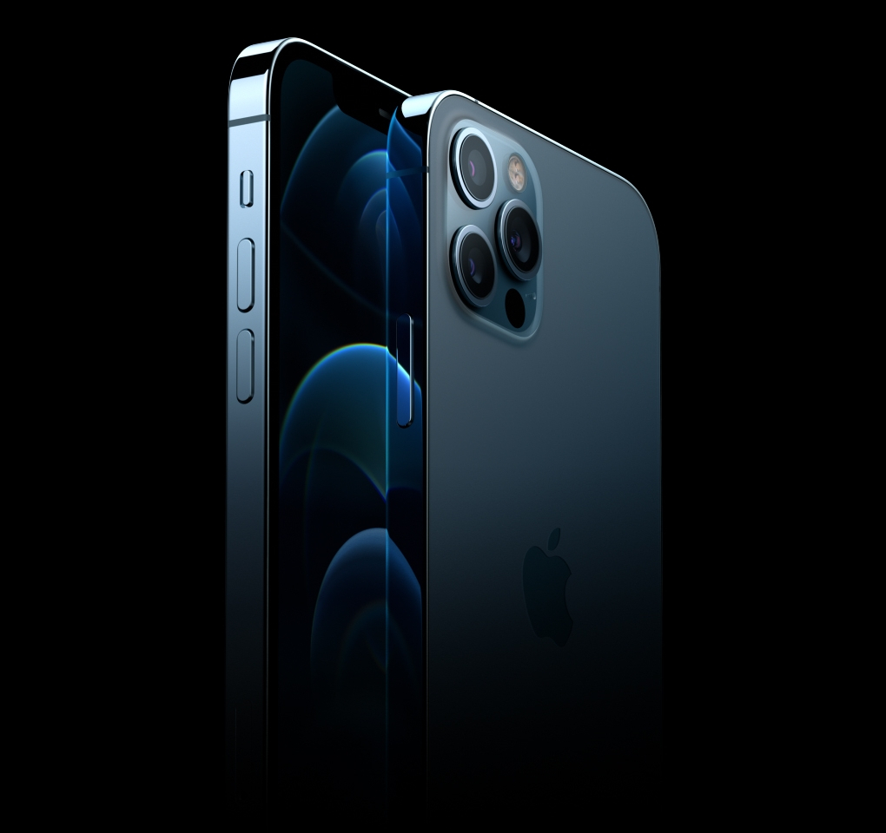

iPhone 12 Pro Max

마감
실버, 그래파이트, 골드, 퍼시픽 블루
Ceramic Shield 소재 전면
표면 질감을 살린 무광 글래스 소재 후면 및
스테인리스 스틸 디자인
저장 용량
128GB 256GB 512GB
크기 및 무게
가로: 78.1mm
세로: 160.8mm
두께: 7.4mm
디스플레이
Super Retina XDR 디스플레이
6.7형(대각선) 전면 화면 OLED 디스플레이
2778 x 1284 픽셀 해상도(458ppi)
iPhone 12 Pro Max 디스플레이는 모서리가 둥근 형태로, 기기의 아름다운 곡면 디자인을 반영합니다.
이 모서리는 기기의 전체적인 모양인 직사각형 내부에 위치합니다. 직사각형 기준으로 측정했을 때,
화면은 대각선 길이 기준 169.55mm(6.68형)입니다 (실제로 보이는 영역은 이보다 좁음).
HDR 디스플레이
True Tone
넓은 색영역(P3)
햅틱 터치
2,000,000:1 명암비(일반)
800 니트 최대 밝기(일반), 1200 니트 최대 밝기(HDR)
지문 및 유분 방지 코팅
여러 언어 및 문자 동시 표시 지원
방수 및 방진
IEC 규격 60529하의 IP68 등급 획득(최대 수심 6m, 최대 30분)
칩
A14 Bionic 칩
차세대 Neural Engine
카메라
프로급 12MP 카메라 시스템: 울트라 와이드, 와이드, 망원 카메라
울트라 와이드: ƒ/2.4 조리개 및 120° 시야각
와이드: ƒ/1.6 조리개
망원: ƒ/2.0 조리개(iPhone 12 Pro), ƒ/2.2 조리개(iPhone 12 Pro Max)
2배 광학 줌인, 2배 광학 줌아웃, 4배 광학 줌 범위(iPhone 12 Pro)
최대 10배 디지털 줌(iPhone 12 Pro)
2.5배 광학 줌인, 2배 광학 줌아웃, 5배 광학 줌 범위(iPhone 12 Pro Max)
최대 12배 디지털 줌(iPhone 12 Pro Max)
LiDAR 스캐너를 활용한 야간 모드 인물 사진
향상된 보케 효과 및 심도 제어 기능을 지원하는 인물 사진 모드
6가지 효과의 인물 사진 조명(자연 조명, 스튜디오 조명, 윤곽 조명, 무대 조명, 무대 조명 모노, 하이키 모노)
듀얼 광학 이미지 흔들림 보정(OIS)(와이드, 망원)
센서 시프트 광학 이미지 흔들림 보정(OIS)(iPhone 12 Pro Max 와이드)
5매(Five-element) 렌즈(울트라 와이드), 6매(Six‑element) 렌즈(망원), 7매(Seven‑element) 렌즈(와이드)
슬로 싱크 기능을 갖춘, 더욱 밝아진 True Tone 플래시
파노라마(최대 63MP)
사파이어 크리스털 렌즈 커버
100% Focus Pixels(와이드)
야간 모드(울트라 와이드, 와이드)
Deep Fusion(울트라 와이드, 와이드, 망원)
스마트 HDR 3
Apple ProRAW*
사진 및 Live Photo 촬영 시 넓은 색상 영역 포착
렌즈 보정(울트라 와이드)
첨단 적목 보정 기능
사진 위치 표시 기능
자동 흔들림 보정
고속 연사 모드
촬영 이미지 포맷: HEIF 및 JPEG
동영상 촬영
Dolby Vision 방식으로 HDR 동영상 촬영(초당 최대 60 프레임)
4K 동영상 촬영(초당 24, 30 또는 60 프레임)
1080p HD 동영상 촬영(초당 30 또는 60 프레임)
720p HD 동영상 촬영(초당 30 프레임)
동영상을 위한 광학 이미지 흔들림 보정(OIS)(와이드)
2배 광학 줌인, 2배 광학 줌아웃, 4배 광학 줌 범위(iPhone 12 Pro)
최대 6배 디지털 줌(iPhone 12 Pro)
2.5배 광학 줌인, 2배 광학 줌아웃, 5배 광학 줌 범위(iPhone 12 Pro Max)
최대 7배 디지털 줌(iPhone 12 Pro Max)
오디오 줌
더욱 밝아진 True Tone 플래시
QuickTake 동영상
1080p 슬로 모션 동영상 지원(초당 120 또는 240 프레임)
타임랩스 동영상(동영상 흔들림 보정 포함)
야간 모드 타임랩스
확장된 동영상 다이내믹 레인지(초당 최대 60 프레임)
시네마틱 동영상 흔들림 보정(4K, 1080p 및 720p)
연속 오토포커스 동영상
4K 동영상 촬영 중 8MP 사진 촬영
재생 중 줌
녹화 동영상 포맷: HEVC 및 H.264
스테레오 녹음
TrueDepth
카메라
12MP 카메라
ƒ/2.2 조리개
향상된 보케 효과 및 심도 제어 기능을 지원하는 인물 사진 모드
6가지 효과의 인물 사진 조명(자연 조명, 스튜디오 조명, 윤곽 조명, 무대 조명, 무대 조명 모노, 하이키 모노)
애니모티콘과 미모티콘
야간 모드
Deep Fusion
스마트 HDR 3
Dolby Vision 방식으로 HDR 동영상 촬영(초당 최대 30 프레임)
4K 동영상 촬영(초당 24, 30 또는 60 프레임)
1080p HD 동영상 촬영(초당 30 또는 60 프레임)
1080p 슬로 모션 동영상 지원(초당 120 프레임)
타임랩스 동영상(동영상 흔들림 보정 포함)
야간 모드 타임랩스
확장된 동영상 다이내믹 레인지(초당 최대 30 프레임)
시네마틱 동영상 흔들림 보정(4K, 1080p 및 720p)
QuickTake 동영상
사진 및 Live Photo 촬영 시 넓은 색상 영역 포착
렌즈 보정
Retina Flash
자동 흔들림 보정
고속 연사 모드
Face ID
얼굴 인식용 TrueDepth 카메라를 통해 지원
이동통신사
Kt LG SK
셀룰러 및 무선 기술
모델 A2407**
5G NR(대역 n1, n2, n3, n5, n7, n8, n12, n20, n25, n28, n38, n40, n41, n66, n77, n78, n79)
FDD-LTE(대역 1, 2, 3, 4, 5, 7, 8, 12, 13, 17, 18, 19, 20, 25, 26, 28, 30, 32, 66)
TD-LTE(대역 34, 38, 39, 40, 41, 42, 46, 48)
UMTS/HSPA+/DC-HSDPA(850, 900, 1700/2100, 1900, 2100 MHz)
GSM/EDGE(850, 900, 1800, 1900 MHz)
모델 A2411**
5G NR(대역 n1, n2, n3, n5, n7, n8, n12, n20, n25, n28, n38, n40, n41, n66, n77, n78, n79)
FDD-LTE(대역 1, 2, 3, 4, 5, 7, 8, 12, 13, 17, 18, 19, 20, 25, 26, 28, 30, 32, 66)
TD-LTE(대역 34, 38, 39, 40, 41, 42, 46, 48)
UMTS/HSPA+/DC-HSDPA(850, 900, 1700/2100, 1900, 2100 MHz)
GSM/EDGE(850, 900, 1800, 1900 MHz)
전체 모델
5G(sub‑6 GHz)
4x4 MIMO 방식 및 LAA를 지원하는 Gigabit LTE4
2x2 MIMO 방식의 Wi‑Fi 6(802.11ax)
Bluetooth 5.0 무선 기술
주변 인식 기능 구현용 초광대역 칩
리더 모드를 지원하는 NFC
예비 전력으로 작동하는 익스프레스 카드 기능
위치
내장형 GPS, GLONASS, Galileo, QZSS, BeiDou
디지털 나침반
Wi‑Fi
셀룰러
iBeacon 위치 정밀 감지 기능
영상 통화
셀룰러 또는 Wi-Fi 네트워크에서 FaceTime 영상 통화
5G 또는 Wi-Fi 네트워크에서 FaceTime HD(1080p) 영상 통화
음성 통화
FaceTime 음성 통화
LTE 음성 통화(VoLTE)
오디오 재생
지원되는 오디오 포맷: AAC‑LC, HE‑AAC, HE‑AAC v2, 복사 방지된 AAC, MP3, Linear PCM, Apple Lossless, FLAC, Dolby Digital(AC‑3), Dolby Digital Plus(E‑AC‑3), Dolby Atmos, Audible(포맷 2, 3, 4, Audible Enhanced Audio, AAX, AAX+)
공간 음향 재생
최대 음량 제한 설정 가능
동영상 재생
지원되는 동영상 포맷: HEVC, H.264, MPEG-4 Part 2, Motion JPEG
Dolby Vision, HDR10, HLG를 지원하는 HDR
최대 4K HDR AirPlay 미러링, 사진, 동영상을 AirPlay 2 지원 스마트 TV로 출력
동영상 미러링 및 동영상 출력 지원: Lightning Digital AV 어댑터 및 Lightning-VGA 어댑터 사용 시 최대 1080p(어댑터 별매)
Siri
음성으로 메시지 전송, 미리 알림 설정 등 다양한 기능 실행 가능
잠금 화면, 메시지, Mail, QuickType 등에서 지능형 제안 제공
“Siri야”라고 불러 음성만으로 핸즈프리 활성화
즐겨 쓰는 앱에서 음성으로 단축어 실행
외부 버튼 및 커넥터

전원 및 배터리
동영상 재생:
최대 20시간
동영상 재생(스트리밍):
최대 12시간
오디오 재생:
최대 80시간
충전식 리튬 이온 배터리 내장
최대 15W MagSafe 무선 충전
최대 7.5W Qi 무선 충전
컴퓨터 USB 포트 연결 또는 전원 어댑터로 충전
급속 충전 가능:
20W 이상 규격의 어댑터 사용 시 30분에 최대 50% 충전(어댑터 별매)
MagSafe
최대 15W 무선 충전
자석 어레이
정렬 자석
액세서리 식별용 NFC
자력계
센서
Face ID
LiDAR 스캐너
기압계
3축 자이로
가속도계
근접 센서
주변광 센서
운영체제
iOS 14
세상에서 가장 친밀하고 안전한 모바일 운영체제인 iOS.
넘치도록 다양하고 강력한 기능들과, 당신의 개인정보를 철통 보호하도록 설계된 시스템을 만나보세요.
손쉬운 사용
손쉬운 사용 기능은 장애가 있는 사용자가 새로운 iPhone의 기능을 최대한 활용할 수 있도록 돕습니다. 시각, 청각,
운동능력, 학습능력 지원 기능이 내장되어 있어, 세상에서 가장 강력한 개인용 기기를 마음껏 즐길 수 있습니다.
포함된 기능:
VoiceOver
확대/축소
확대기
RTT 및 TTY 지원
Siri 및 받아쓰기
타이핑으로 Siri 사용
스위치 제어
청각 장애인용 자막
AssistiveTouch
화면 말하기
뒷면 탭
내장 앱

무료 Apple 앱
Pages, Numbers, Keynote, iMovie, GarageBand, Clips 및 Apple Store 앱이 기본 설치되어 있습니다.

SIM 카드
듀얼 SIM(nano-SIM 및 eSIM)
iPhone 12 Pro 및 iPhone 12 Pro Max는 기존 micro‑SIM 카드와 호환되지 않음.
보청기 호환 등급
M3, T4
메일 첨부 지원
볼 수 있는 문서 종류
.jpg, .tiff, .gif(이미지), .doc 및 .docx(Microsoft Word), .htm 및 .html(웹 페이지), .key(Keynote), .numbers(Numbers), .pages(Pages), .pdf(미리보기 및 Adobe Acrobat), .ppt 및 .pptx(Microsoft PowerPoint), .txt(텍스트), .rtf(리치 텍스트 포맷), .vcf(연락처 정보), .xls 및 .xlsx(Microsoft Excel), .zip, .ics, .usdz(USDZ Universal)
시스템 요구 사양
Apple ID(일부 기능에서 필요)
인터넷 연결13
Mac 또는 PC에서 동기화 시 요구 사양:
macOS Catalina 10.15 이후 버전: Finder 사용
macOS El Capitan 10.11.6부터 macOS Mojave 10.14.6까지: iTunes 12.8 이후 버전 사용
Windows 7 이후 버전: iTunes 12.10.10 이후 버전 사용(itunes.com/kr/download에서 무료 다운로드)
사용 환경
작동 온도: 0°C~35°C
보관 가능(비작동) 온도: −20°C~45°C
상대 습도: 5%~95% 미응결
작동 고도: 3,000m까지 테스트
언어
언어 지원
한국어, 영어(오스트레일리아, 영국, 미국), 중국어(간체, 번체, 홍콩 번체), 프랑스어(캐나다, 프랑스), 독일어, 이탈리아어, 일본어, 스페인어(라틴 아메리카, 멕시코, 스페인), 아랍어, 카탈로니아어, 크로아티아어, 체코어, 덴마크어, 네덜란드어, 핀란드어, 그리스어, 히브리어, 힌디어, 헝가리어, 인도네시아어, 말레이어, 노르웨이어, 폴란드어, 포르투갈어(브라질, 포르투갈), 루마니아어, 러시아어, 슬로바키아어, 스웨덴어, 태국어, 터키어, 우크라이나어, 베트남어
QuickType 키보드 지원
한국어(두벌식, 10키), 영어(오스트레일리아, 캐나다, 인도, 싱가포르, 영국, 미국), 중국어 - 간체(손글씨, 병음 QWERTY, 병음 10키, 이중 자획, 자획), 중국어 - 번체(창힐입력, 손글씨, 병음 QWERTY, 병음 10키, 이중 자획, 자획, 빠른 창힐입력, 주음), 프랑스어(벨기에, 캐나다, 프랑스, 스위스), 독일어(오스트리아, 독일, 스위스), 이탈리아어, 일본어(가나, 로마지), 스페인어(라틴 아메리카, 멕시코, 스페인), 알바니아어, 아랍어(현대 표준어, 나지디), 아르메니아어, 아삼어, 아제르바이잔어, 벵골어, 벨라루스어, 보도어, 불가리아어, 버마어, 광둥어 - 번체(창힐입력, 손글씨, 자획, 빠른 창힐입력), 카탈로니아어, 체로키어, 크로아티아어, 체코어, 덴마크어, 디베히어, 도그리어, 네덜란드어, 이모티콘, 에스토니아어, 페로어, 필리핀어, 핀란드어, 플라망어, 조지아어, 그리스어, 구자라트어, 하와이어, 히브리어, 힌디어(데바나가리, 라틴어, 음역), 헝가리어, 아이슬란드어, 인도네시아어, 아일랜드 게일어, 칸나다어, 카슈미르어(아랍어, 데바나가리), 카자흐어, 크메르어, 콘카니어(데바나가리), 쿠르드어(아랍어, 라틴어), 키르기스어, 라오어, 라트비아어, 리투아니아어, 마케도니아어, 마이틸리어, 말레이어(아랍어, 라틴어), 말라얄람어, 몰타어, 마니푸리어(벵골어, 미테이 마예크어), 마오리어, 마라티어, 몽골어, 네팔어, 노르웨이어(보크몰어, 뉘노르스크어), 오디아어, 파슈토어, 페르시아어, 페르시아어(아프가니스탄), 폴란드어, 포르투갈어(브라질, 포르투갈), 펀자브어, 루마니아어, 러시아어, 산스크리트어, 산탈어(데바나가리, 올 치키어), 세르비아어(키릴어, 라틴어), 신드어(아랍어, 데바나가리), 신할라어, 슬로바키아어, 슬로베니아어, 스와힐리어, 스웨덴어, 타지크어, 타밀어(안잘어, 타밀어 99), 텔루구어, 태국어, 티베트어, 통가어, 터키어, 투르크멘어, 우크라이나어, 우르두어, 위구르어, 우즈베크어(아랍어, 키릴어, 라틴어), 베트남어, 웨일스어
자동 수정 기능을 탑재한 QuickType 키보드 지원
한국어(두벌식), 아랍어(현대 표준어), 아랍어(나지디), 뱅골어, 불가리아어, 카탈로니아어, 체로키어, 중국어 - 간체(병음 QWERTY), 중국어 - 번체(병음 QWERTY), 중국어 - 번체(주음), 크로아티아어, 체코어, 덴마크어, 네덜란드어, 영어(오스트레일리아), 영어(캐나다), 영어(인도), 영어(일본), 영어(싱가포르), 영어(영국), 영어(미국), 에스토니아어, 필리핀어, 핀란드어, 네덜란드어(벨기에), 프랑스어(벨기에), 프랑스어(캐나다), 프랑스어(프랑스), 프랑스어(스위스), 독일어(오스트리아), 독일어(독일), 독일어(스위스), 그리스어, 구자라트어, 하와이어, 히브리 어, 힌디어(데바나가리), 힌디어(음역), 헝가리어, 아이슬란드어, 인도네시아어, 아일랜드 게일어, 이탈리아어, 일본어(가나), 일본어(로마지), 라트비아어, 리투아니아어, 마케도니아어, 말레이어, 마라티어, 노르웨이어(보크몰어), 노르웨이어(뉘노르스크어), 페르시아어, 페르시아어(아프가니스탄), 폴란드어, 포르투갈어(브라질), 포르투갈어(포르투갈), 펀자브어, 루마니아어, 러시아어, 세르비아어(키릴어), 세르비아어(라틴어), 슬로바키아어, 슬로베니아어, 스페인어(라틴 아메리카), 스페인어(멕시코), 스페인어(스페인), 스웨덴어, 타밀어(안잘어), 타밀어(타밀어 99), 텔루구어, 태국어, 터키어, 우크라이나어, 우르두어, 베트남어
자동 완성 기능을 탑재한 QuickType 키보드 지원
한국어, 영어(오스트레일리아, 캐나다, 인도, 싱가포르, 영국, 미국), 중국어(간체, 번체), 프랑스어(벨기에, 캐나다, 프랑스, 스위스), 독일어(오스트리아, 독일, 스위스), 이탈리아어, 일본어, 스페인어(라틴 아메리카, 멕시코, 스페인), 아랍어(현대 표준어, 나지디), 광둥어(번체), 네덜란드어, 힌디어(데바나가리, 라틴어), 포르투갈어(브라질, 포르투갈), 러시아어, 스웨덴어, 태국어, 터키어, 베트남어
다국어 입력 기능을 탑재한 QuickType 키보드 지원
영어(미국), 영어(오스트레일리아), 영어(캐나다), 영어(인도), 영어(싱가포르), 영어(영국), 중국어 - 간체(병음), 중국어 - 번체(병음), 프랑스어(프랑스), 프랑스어(벨기에), 프랑스어(캐나다), 프랑스어(스위스), 독일어(독일), 독일어(오스트리아), 독일어(스위스), 이탈리아어, 일본어(로마지), 포르투갈어(브라질), 포르투갈어(포르투갈), 스페인어(스페인), 스페인어(라틴 아메리카), 스페인어(멕시코), 네덜란드어(벨기에), 네덜란드어(네덜란드), 힌디어(라틴어)
맥락에 맞는 제안 기능을 탑재한 QuickType 키보드 지원
영어(미국), 영어(오스트레일리아), 영어(캐나다), 영어(인도), 영어(싱가포르), 영어(영국), 중국어(간체), 프랑스어(벨기에), 프랑스어(캐나다), 프랑스어(프랑스), 프랑스어(스위스), 독일어(오스트리아), 독일어(독일), 독일어(스위스), 이탈리아어, 스페인어(라틴 아메리카), 스페인어(멕시코), 스페인어(스페인), 아랍어(현대 표준어), 아랍어(나지디), 네덜란드어(벨기에), 네덜란드어(네덜란드), 힌디어(데바나가리), 힌디어(라틴어), 러시아어, 스웨덴어, 포르투갈어(브라질), 터키어, 베트남어
Siri 언어
한국어(대한민국), 영어(오스트레일리아, 캐나다, 인도, 아일랜드, 뉴질랜드, 싱가포르, 남아프리카 공화국, 영국, 미국), 스페인어(칠레, 멕시코, 스페인, 미국), 프랑스어(벨기에, 캐나다, 프랑스, 스위스), 독일어(오스트리아, 독일, 스위스), 이탈리아어(이탈리아, 스위스), 일본어(일본), 북경어(중국 본토, 대만), 광둥어(중국 본토, 홍콩), 아랍어(사우디아라비아, 아랍 에미리트 연합국), 덴마크어(덴마크), 네덜란드어(벨기에, 네덜란드), 핀란드어(핀란드), 히브리어(이스라엘), 말레이어(말레이시아), 노르웨이어(노르웨이), 포르투갈어(브라질), 러시아어(러시아), 스웨덴어(스웨덴), 태국어(태국), 터키어(터키)
받아쓰기 언어
한국어, 영어(오스트레일리아, 캐나다, 인도, 인도네시아, 아일랜드, 말레이시아, 뉴질랜드, 필리핀, 사우디아라비아, 싱가포르, 남아프리카 공화국, 아랍 에미리트 연합국, 영국, 미국), 스페인어(아르헨티나, 칠레, 콜롬비아, 코스타리카, 도미니카 공화국, 에콰도르, 엘살바도르, 과테말라, 온두라스, 멕시코, 파나마, 파라과이, 페루, 스페인, 우루과이, 미국), 프랑스어(벨기에, 캐나다, 프랑스, 룩셈부르크, 스위스), 독일어(오스트리아, 독일, 룩셈부르크, 스위스), 이탈리아어(이탈리아, 스위스), 일본어, 북경어(중국 본토, 대만), 광둥어(중국 본토, 홍콩, 마카오), 아랍어(쿠웨이트, 카타르, 사우디아라비아, 아랍 에미리트 연합국), 카탈로니아어, 크로아티아어, 체코어, 덴마크어, 네덜란드어(벨기에, 네덜란드), 핀란드어, 그리스어, 히브리어, 힌디어(인도), 헝가리어, 인도네시아어, 말레이시아어, 노르웨이어, 폴란드어, 포르투갈어(브라질, 포르투갈), 루마니아어, 러시아어, 상하이어(중국 본토), 슬로바키아어, 스웨덴어, 태국어, 터키어, 우크라이나어, 베트남어
사전 지원
한국어, 영어(영국, 미국), 중국어(간체, 번체), 덴마크어, 네덜란드어, 프랑스어, 독일어, 히브리어, 힌디어, 이탈리아어, 일본어, 노르웨이어, 포르투갈어, 러시아어, 스페인어, 스웨덴어, 태국어, 터키어
2개 국어 사전 지원
한국어 – 영어, 아랍어 – 영어, 중국어(간체) – 영어, 중국어(번체) – 영어, 네덜란드어 – 영어, 프랑스어 – 영어, 프랑스어 – 독일어, 독일어 – 영어, 힌디어 – 영어, 인도네시아어 – 영어, 이탈리아어 – 영어, 일본어 – 영어, 일본어 – 중국어(간체), 폴란드어 – 영어, 포르투갈어 – 영어, 러시아어 – 영어, 스페인어 – 영어, 태국어 – 영어, 베트남어 – 영어
유의어 사전
영어(영국, 미국)
맞춤법 검사
한국어, 영어, 프랑스어, 독일어, 이탈리아어, 스페인어, 아랍어, 아랍어(나지디), 덴마크어, 네덜란드어, 핀란드어, 노르웨이어, 폴란드어, 포르투갈어, 러시아어, 스웨덴어, 터키어
제품 구성
iOS 14이 설치된 iPhone
USB-C-Lightning 케이블
설명서
전기용품 및 생활용품 안전관리법에 의한 표시
제품명: 스마트폰
모델명: A2407, A2411
수입자: 애플코리아 유한회사